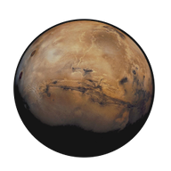

Другой Марс
Пётр Косых
Играть онлайн
Год 2027 от Рождества Христова.
Экипаж миссии «Mars One» высаживается на Марс. Задача миссии -- собрать первую марсианскую базу и подготовиться к встрече второго экипажа.
Ты -- инженер Александр Морозов, один из четырёх поселенцев. Сегодня, после сборки последнего жилого модуля, ты впервые получил возможность изучить окрестности базы.
Надев скафандр и взяв необходимое оборудование, ты направляешься в шлюзовой модуль...